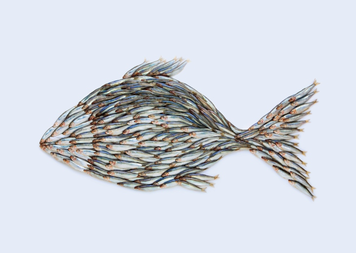
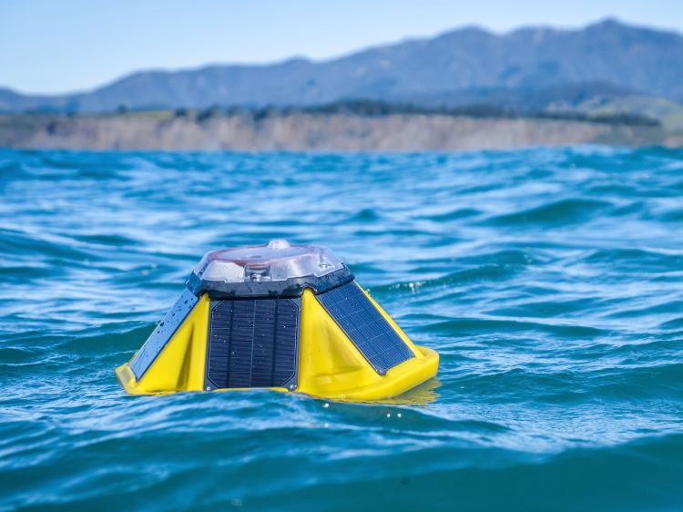
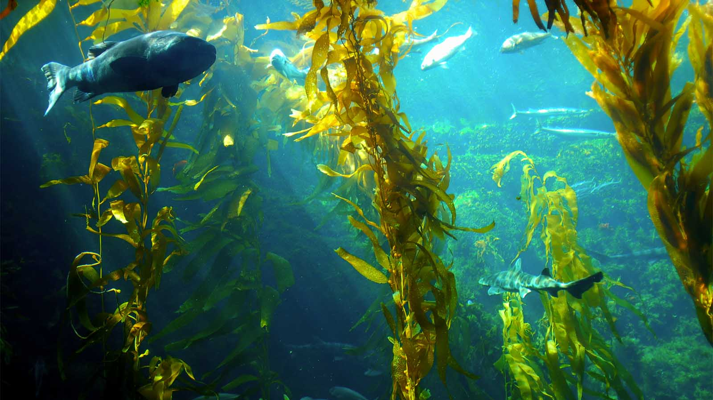

Larsen Mettler is Managing Director at S2G Ventures, a multi-stage venture fund which invests in entrepreneurs improving our food systems. In this edited conversation with Peter Green, Larsen spoke about his experience leading the Oceans and Seafood fund, his outlook on algae-tech, and the arrival of new funds in the oceans and seafood space.
.webp)
S2G Ventures started in 2014 and focussed on investing in climate health, human health and animal health. It was largely based on fostering disruptive technologies across terrestrial food and agriculture supply chains. Over time, S2G saw that the oceans and seafood space was a natural extension of their food and agriculture work. After a deep dive into aquaculture, the team realised that they needed a separately managed fund with different goals and industry experts focussed on that space.
The oceans and seafood sector is considered to be very nascent, both in economic as well as human capital terms. As a result, while we're looking to develop the industry ourselves, we're also aiming to catalyse the arrival of others into the space. I previously worked as an investment banker in the corporate side of this space. In that role, I noticed that a handful of investors were hesitant to get involved. Few would invest, and that was largely due to the sector's exposure to climate shifts, seasonal fluctuations, and cyclical fluctuations. We still see several investors sitting on the sidelines waiting for someone to take a leadership role.

Fortunately, we have seen more funds pop-up over the last year. Aqua-Spark was the first to come out and lead the charge, paving the way for early-stage capital. Incubators arrived shortly after that and seeded a lot of early-stage companies. We're also seeing platform technologies from other industries coming into seafood. People are opening their minds to the likes of precision farming, precision harvesting, and sustainability. They're borrowing technologies from other industries and de-risking the sector.
As that's happening, we're now seeing more players, both from the fund side and the corporate side, willing to invest.
IoT and data will contribute to the growth of this sector tremendously. People often compare the oceans to space because they are both so unexplored. There is a lot to learn here and as gather more data, we'll be able to study the oceans so much more.

I see data playing a number of different roles. Firstly, we'll be able to better study the relationship between climate change and the oceans. When I was based on the corporate side of the sector, I worked for a well-managed company and fishery. Despite their efforts, climate played a role that we didn't foresee. Increasing ocean acidity, rising water temperatures, and algal blooms had a huge impact on fish stocks. In addition, we kept seeing fish move towards the northwest, away from the United States. I believe that's going to continue as the ocean's warm.
In addition, data will help us deepen our understanding of weather patterns and this can help in many ways. For example, through improved monitoring and prediction of waves and wind, we can facilitate the adoption of renewable energy by identifying the best locations to put turbines.
Finally, data will play a role with carbon capture. It's a bit of a mystery how blue carbon will contribute to the future, however, there are several companies accounting for this now and we're very excited about that.
This subject area is vastly understudied and not well understood. Using macroalgae for burgers and regenerating ecosystems is just the tip of the iceberg. We must remember that all land plants came from sea plants. These are the building blocks of life and there's going to be a huge unlocking of potential here.

I'm interested to see if someone will build a seed bank for both macro and micro algae. It's important to categorise these plants, study their full potential, and protect them for the future.
It depends on what series we've invested in. However, a common theme for companies in this space is product-market fit. Specifically, can the product we are making scale and will it be adopted by big players in a meaningful way? We like to sit down with entrepreneurs and tell them that it's ok if they pivot along the way.
A second challenge comes in the form of human capital. These are such novel technologies and services. You can't just go out and get someone with loads of experience. There aren't a lot of people out there and you're building the plane as you fly it in a lot of instances. Despite this, if the team have a beginner's mindset we believe they will continue to be successful.
It often boils down to having a beginner's mindset. I received this advice from one of my colleagues, Chuck Templeton. Coming to every idea in every conversation with an open mind is critical. If you surround yourself with good, hard-working people with that mindset, you can be successful.